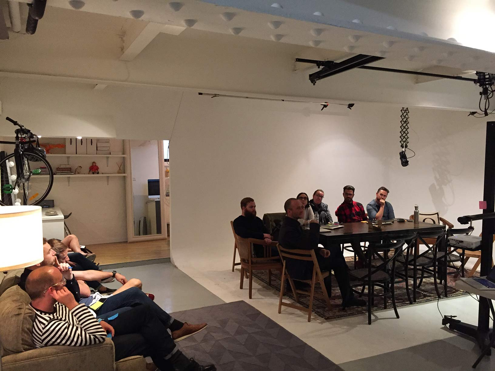

Petra Gulicher, ustwo
CoderFactory Academy, August 31st 2016
Front end developer, drive-by devops, full-stack JavaScript engineer.
Everything we do today will be regular old CSS.
The only thing better than more CSS, is less CSS.
display: inline-block;)See the Pen JRPpaJ by Petra Gulicher (@petronbot) on CodePen.
| Pros | Cons |
|---|---|
| Good browser support | Clearfixing |
| Easy to write | Need to set known width |
| Elements always display in source order | Unexpected results with irregular sized boxes |
See the Pen Floats by Petra Gulicher (@petronbot) on CodePen.
Boxes don't have to have sizes for you to make them fit, or fill a container.
See the Pen Flexbox by Petra Gulicher (@petronbot) on CodePen.